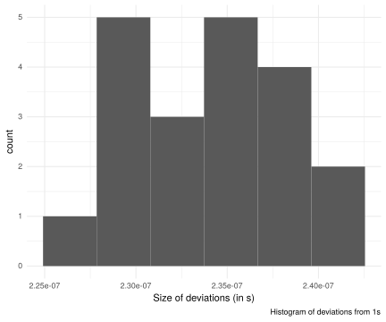
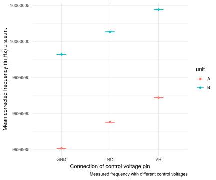

I have 2 10 MHz Oscilloquartz 8863 modules (rebranded as UCT) that I have bought used from ebay with an intention of building either a better internal reference for my frequency counter (a HP53131a) or an external 10MHz reference for lab distribution. These oscillators can be controlled by plus/minus 0.3 ppm with a control voltage between 0 and 10V, but my worry is that they are too old, and have drifted so far that they are difficult to control to exactly 10MHz. But how to measure the reliability of an oscillator without a reliable frequency counter?
My strategy is to use a GPS module that I also have bought of ebay, a cheap ublox 7m module conveniently brings out 1pps to a pin. This should be straight from the satelite feed, so if I use my inaccurate counter to measure the period of the 1pps signal, I can get a hang on how far off my counter is and calculate a correction factor. Then I’ll measure my Oscilloquartz units at different control voltages to see if it looks like they are able to get 10MHz into their control range.
I have never measured periods with my counter before, and I struggled initially to find the right sensitivity and trigger level. On my scope, I found that the 1pps pulse was a square 100ms long pulse at 3.3V. In the end I set the trigger level to 1V manually, and this worked fine. I made 20 measurements of the period, and found and average period of 1.00000023427 seconds, with a standard deviation of 4.54e-09. So it seems that the oscillator of my counter is running a bit high.

I mark the oscillators “A” and “B” to keep them apart.
I measure them in three states: 1) Without touching the control voltage (CV) pin (in which case I can measure 4.4V on the pin), 2) shorting the CV pin to the voltage reference (VR) pin, which should be around 8V (I measure a bit lower), and 3) shorting VC to GND. Before measurement I let the oscillators warm up by noticing when the current draw went from 0.5A to around 0.2A and then give them a couple of additional minutes to stabilize.
To determine the reliability of my measurements, I should take into account the errors involved in my measurement of the GPS period. Assuming independence in these estimates, the formula for the variance of a product is \[ var(XY) = var(X)var(Y) + var(X)E(Y)^2 + var(Y) E(X)^2, \] so based on two vectors of measurements, I should be able to calculate the estimated standard error of the product using this function:
se_product <- function(X,Y) {
vxm <- var(X)/length(X)
vym <- var(Y)/length(Y)
ex <- mean(X)
ey <- mean(Y)
vxy <- vxm*vym + vxm*ey^2 + vym*ex^2
sqrt(vxy)
}After correcting for the error in the counter, these are my measurements and estimated error-bars: 
The error-bars really are that vertically compressed…
What to conclude?